Tim Ballard posted a two-part reading from his "forthcoming book," billed as a "follow up here to Backfire." It is mostly Isaiah. Here is what he said Isaiah says, next to what Isaiah says.
Quote, the earth also is defiled under the inhabitants thereof because the Gentile covenant leaders, because they or the Gentile covenant leaders have transgressed the laws, changed the ordinances, broken the everlasting covenant
The earth also is defiled under the inhabitants thereof; because they have transgressed the laws, changed the ordinance, broken the everlasting covenant.
"Gentile covenant leaders" appears in Isaiah zero times.
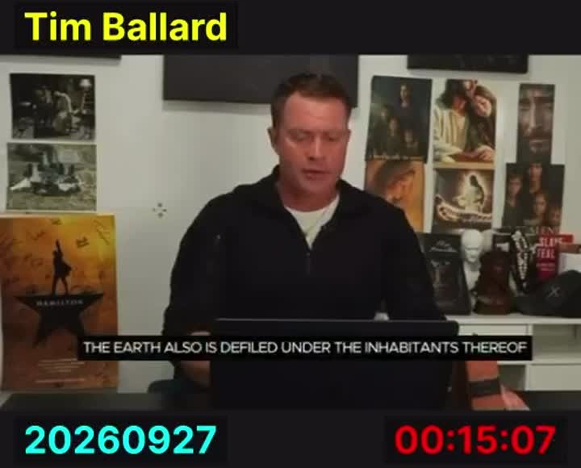
Your lips have spoken lies. I'll say that again. Your lips have spoken lies. Watch backfire. Your tongue have muttered perversionist. Isaiah 59, 13
your lips have spoken lies, your tongue hath muttered perverseness.
The line is verse 3, not 13. It does not mention Backfire.
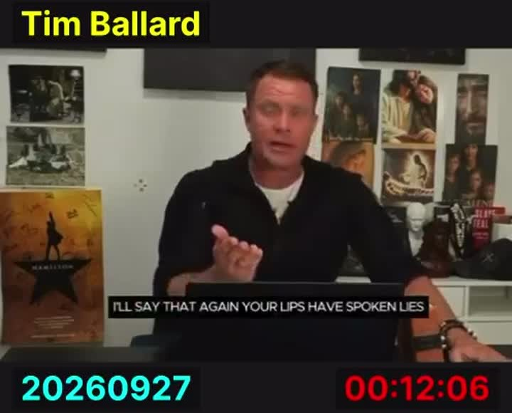
Isaiah 6 indicates that at first only 1%, and then maybe up to 10 % of the entire world population
But yet in it shall be a tenth, and it shall return, and shall be eaten
A tenth, of the land. No 1%, no world population.
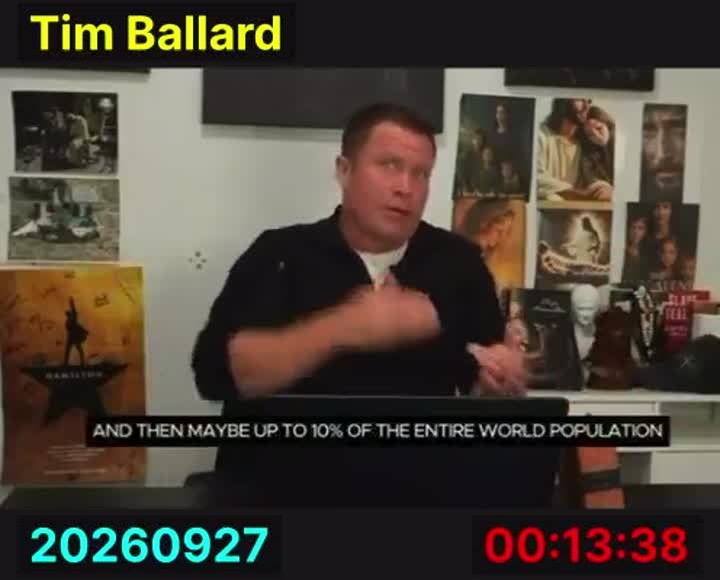
at the end of his book chapter 57 of 66 books
and in the two final books, Isaiah chapter 65 and 66
After hammering the indicted over the course of 66 books, the Lord offers his final arguments and final verdict in the last two books, chapters 65 and 66.
Isaiah: one book, 66 chapters. The King James Bible: 66 books.
The number is right twice over. He puts it on the wrong thing.
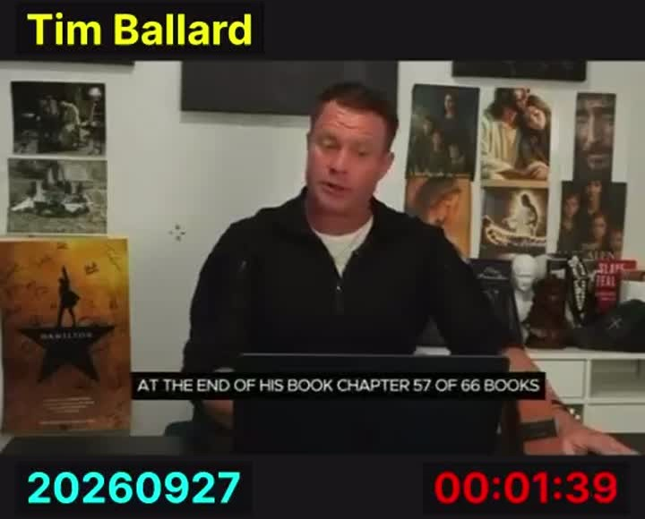
And finally, cultic practices and abuse under the sacred trees. Isaiah 1, 29.
For they shall be ashamed of the oaks which ye have desired, and ye shall be confounded for the gardens that ye have chosen.
Oaks and gardens. No abuse.
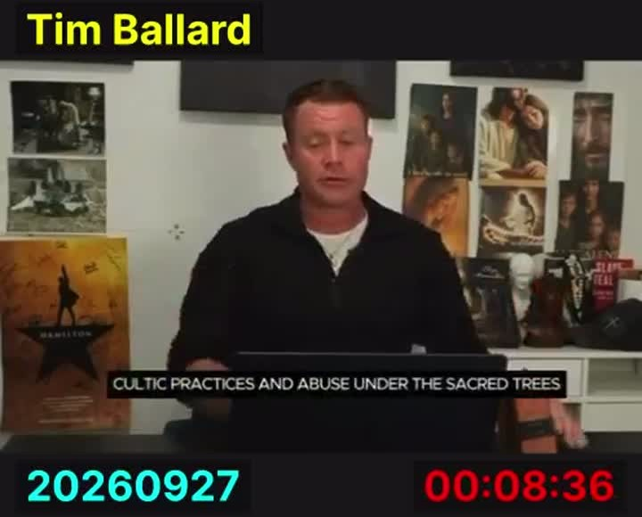
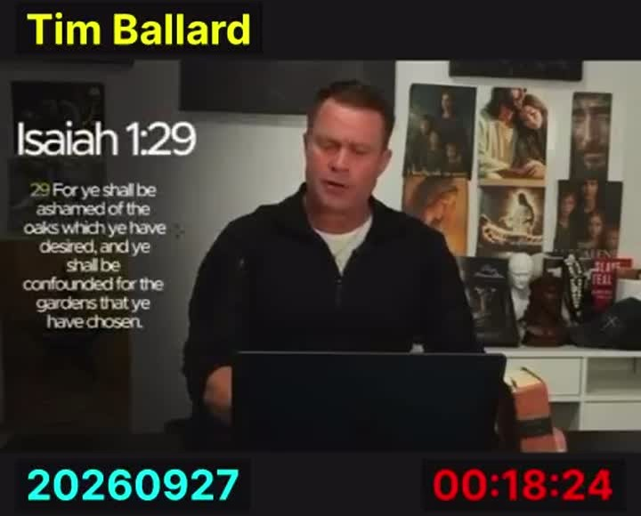
According to Isaiah, the Gentile leaders will be inflaming themselves with idols under every green tree, slaying the children in the valleys under the clefs of the rocks, Isaiah 57.5.
But draw near hither, ye sons of the sorceress, the seed of the adulterer and the whore… Enflaming yourselves with idols under every green tree, slaying the children in the valleys under the clifts of the rocks?
"Gentile" appears in Isaiah 57 zero times. A few minutes later, at the start of Part 2, he says so himself:
These prophecies don't necessarily declare that the Gentile leaders and or elites will themselves directly abuse these children, rather the suggestion may be…
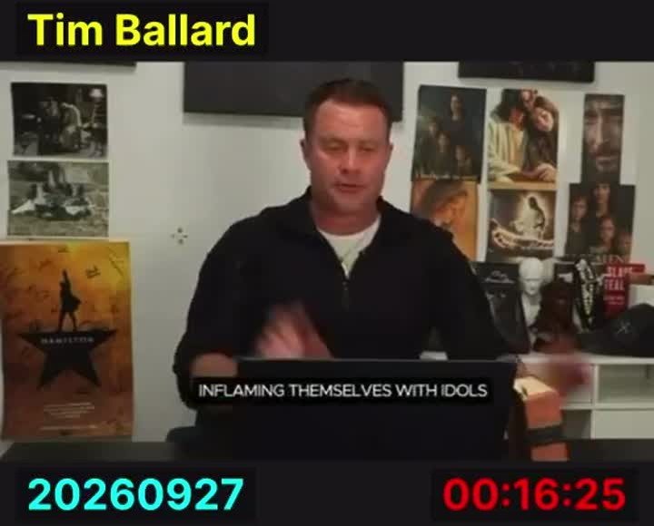
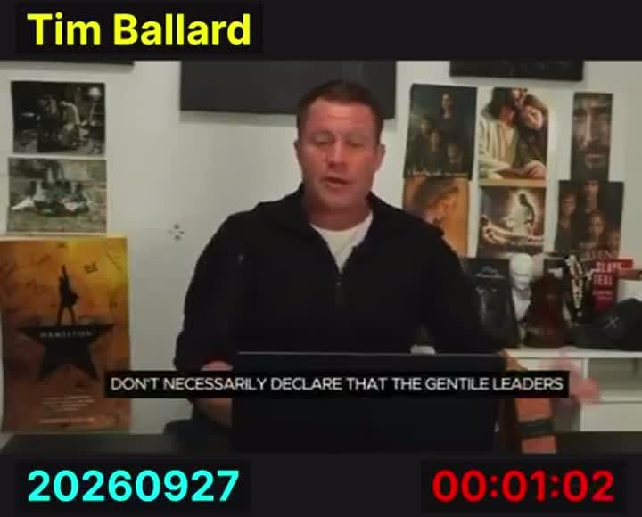
Instead, quote, they spread sackcloth and ashes under themselves to be seen of men
to spread sackcloth and ashes under him? wilt thou call this a fast… (Isaiah 58:5)
…that they may be seen of men. (Matthew 6:5)
"Seen of men" is from the Sermon on the Mount.
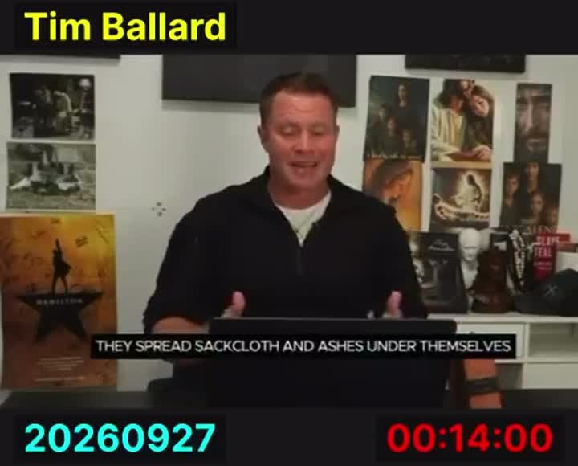
In Joel chapter 1 he sets the final judgment, the scene saying quote, for behold in those days and in that time when I shall bring again the captivity of Judah and Jerusalem…
The word of the LORD that came to Joel the son of Pethuel. Hear this, ye old men… (Joel 1)
For, behold, in those days, and in that time, when I shall bring again the captivity of Judah and Jerusalem… (Joel 3)
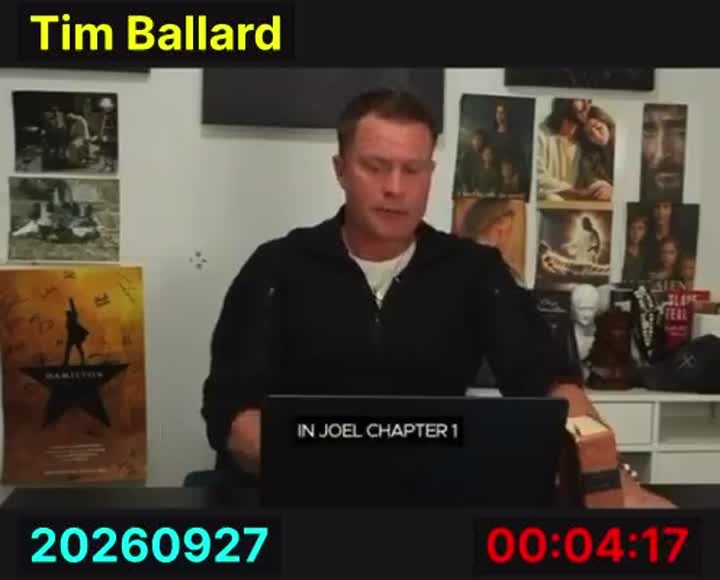
I don't like scripts. I like to talk and I'm able to say what I think the Lord wants me to say in that moment.
I know I have a hard time not commenting, I like the comment, I'm not going to do that, I'm just going to read it straight through
I said it wasn't going to come up, but this is an important one.
"Backfire," said aloud during the reading: 3 times in Part 1, 9 times in Part 2.
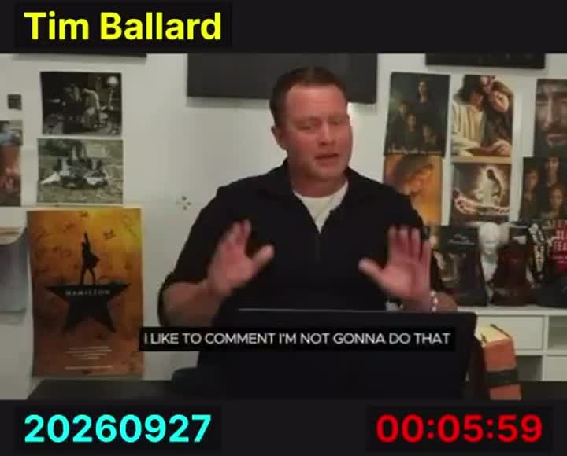
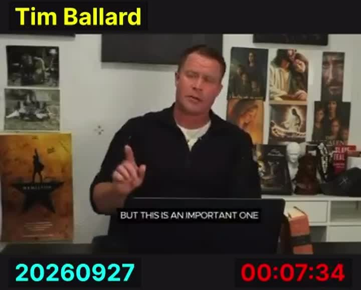
my book, The Cost of Freedom, a true story based on the lie.
my book the cost of freedom a true story based on a lie
But it's so crazy to think you can watch backfire read all this and still think I'm right.
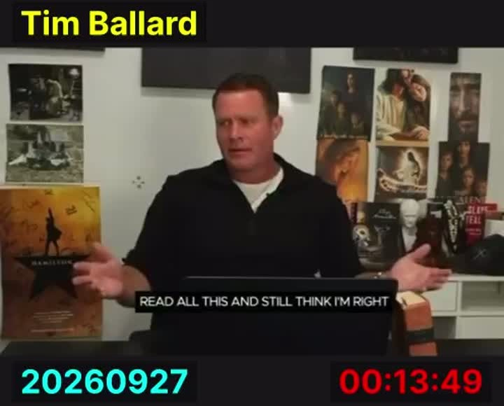
"Come now, and let us reason together, saith the LORD." Isaiah 1:18, the last verse he reads.